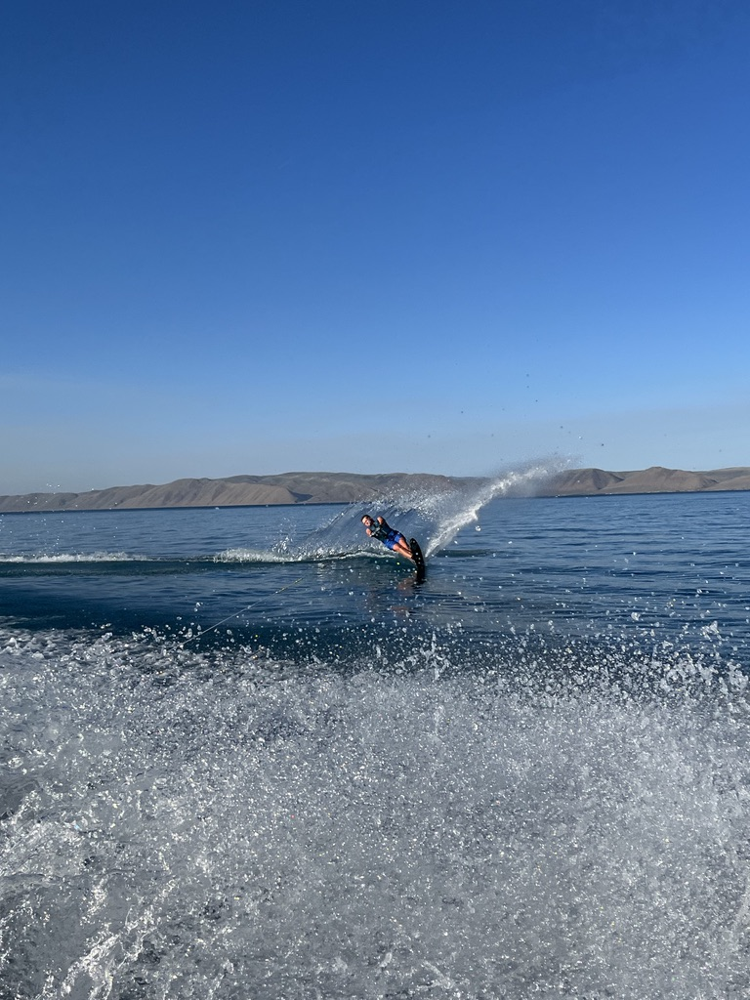

Life on the Water
There's nothing quite like a calm glassy ski at 6:00am with the spray hitting your face, and a perfect wave behind the boat for a chill surf session. Water sports have been a huge part of my life, from growing up spending my summers at bear lake to working at The Boat Shack and Marine Products, where I learned the business of boating from the inside out.
The Intermountain West might seem like an unlikely home for water sports, but Utah's reservoirs — Lake Powell, Bear Lake, Jordanelle, and Utah Lake along with others are great spots to have a lake day. Whether you're a first-timer or a seasoned pro, there's something for everyone out on the water.

Popular Water Sports
Water sports range from relaxed tube rides to high-intensity wakeboarding competitions. Here's a breakdown of the most popular activities you can enjoy behind a boat, organized by skill level and intensity:
-
Wake Surfing — Surf the wave your boat creates — no rope needed!
- Best with a surf-style ballast tank for a larger, cleaner wave
- Ideal boat speed: 10–12 mph for most riders
- Beginner-friendly with the right board size (5'0"–5'6")
- My personal favorite — nothing beats a long surf session at sunset
-
Water Skiing — The classic. Slalom or two skis, pure speed and carving.
- Typical tow speeds: 26–36 mph depending on skier and course
- Slalom skiing is a competitive sport at national and international levels
- Builds excellent core strength and lower-body stability
-
Wakeboarding — Think snowboarding on water — bindings, tricks, air.
- Bindings lock your feet to the board for control and trick performance
- Riders use the wake as a natural ramp to launch aerial tricks
- Professional tours run worldwide (WWA, CWBA)
-
Tubing — The most accessible and fun for all ages on the water.
- Inflate, tow, and hold on — simple as that
- Perfect for family lake days with no learning curve
- Many styles: round, torpedo, banana, and deck tubes
-
Kneeboarding — Great stepping stone toward wakeboarding.
- Kneeling position provides stability, ideal for beginners
- Easier to learn surface spins before transitioning to standing boards
- Very popular with kids and teens just getting into board sports

Watch: Wake Surfing in Action
Wake surfing has exploded in popularity across the world. Watch the video below to see what it looks like when riders catch the perfect wave and start throwing tricks without the rope.
⚠ YouTube embeds require online hosting — works on GitHub Pages, not locally. Replace the video ID in scratch.html if desired.
📊 Water Recreation Data
This is a chart of boat sales that tracks the number of boat sales by quarter, you can see the growth and increase in sales throughout the last decade. . Explore the interactive visualization below powered by Tableau Public to see trends in boating activities.

Essential Gear Guide
Having the right gear makes all the difference between a great day on the water and a frustrating one. Here's what every boater and water sports enthusiast should know:
Life Jackets (PFDs)
A properly-fitted, Coast Guard-approved Personal Flotation Device is non-negotiable — legally required in most states and genuinely lifesaving. Type III vests are most popular for recreational water sports because they allow full arm movement while skiing or surfing.
Ropes & Handles
Wake surf ropes are shorter (20–25 ft) and stiffer. Slalom ski ropes can extend up to 75 ft. Look for low-stretch material for maximum feedback and control.
Boards & Skis
Longer, wider boards are more stable for beginners. Wake surf boards typically range from 4'6" to 5'6" — match board size to rider weight. For slalom skis, consult manufacturer sizing charts based on your weight and preferred speed.
Safety Gear
Always carry a throw rope, whistle, and fire extinguisher. Make sure your boat's registration is current, navigation lights are functional, and you carry the required number of PFDs for all passengers onboard.

Think You Know Water Sports?
Test your boating knowledge with the ultimate Boat & Water Sports Quiz! 12 questions across safety, technique, gear, and lake trivia.
🚤 Take the Quiz
Built with AI collaboration — a single-page interactive web app